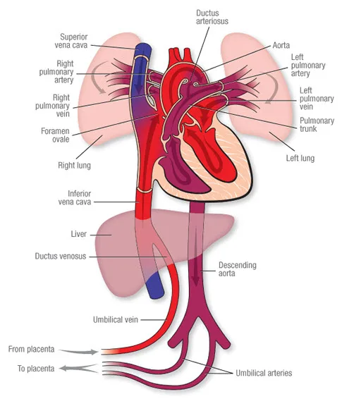

Expanded Nursing Uganda Explanation
Fetal sac should be reviewed through safe maternal and newborn assessment, early recognition of danger signs, respectful communication and timely referral. Connect the definition to vital signs, bleeding, fetal or newborn wellbeing, patient education and local protocol requirements.
Contents, 17 sections (tap to expand)
01 PLACENTA AT TERM
Placenta is a temporary organ of vital communication between the mother and the fetus .
- Situation : It is situated in the upper posterior wall of the uterus before the third stage of labour. During the third stage of labour, it separates, descends, and is finally expelled.
- Shape : It is a flat, round mass.
- Size : It is 18-20 cm in diameter and about 2.5 cm thick around the centre, thinning out towards its edges.
02 Structure of the Placenta
It is made up of two surfaces:
- Maternal surface : Dark red in colour and made up of 18-20 irregular lobes known as cotyledons , each containing masses of chorionic villi. They are divided by deep grooves known as sulci or fissures .
- Fetal surface : Whitish-grey and shining in appearance due to the amniotic membranes which cover it. The umbilical cord is inserted in its center, and blood vessels radiate to the periphery like the roots of a tree. These vessels give off branches which reach the cotyledons, thus each has its own supply of fetal blood.
The Fetal Sac
Consists of two membranes:
- Amnion membrane : This membrane covers the fetus and contains the fluid in which the fetus lives during pregnancy . It is smooth, tough, shiny, and translucent. It is derived from the inner cell mass; its cells (amniotic cells) secrete amniotic fluid.
- Chorion membrane : This is the outer membrane which lies under the decidua capsularis and becomes adherent to the uterine wall. It is thick, rough, opaque, and friable (easily torn). This membrane is derived from the trophoblast. It peels off from the uterus as the placenta separates during the third stage of labor . It sometimes tears, and the pieces may remain inside the uterus; if not expelled in lochia, it may cause sepsis.
03 THE AMNIOTIC FLUID (LIQUOR AMNII)
Amniotic fluid is a protective liquid contained within the amniotic sac in which the fetus floats .
- Amount : Ranges between 500-1500 ml . The amount increases from approximately 30 ml at 10 weeks of gestation to 450 ml at 20 weeks and 800 to 1000 ml at 37 weeks.
- Content : It consists of 99% water, various mineral salts, urea (derived from fetal urine), and a trace of proteins (0.25%). It sometimes contains meconium (fetal rectal waste), vernix caseosa (the white, fatty substance covering the fetus), and hair. It is alkaline due to the presence of phosphates and chloride salts.
- Colour : It is a pale straw-coloured fluid and should be odourless and sterile .
- Origin : The fluid is produced by amniotic cells/epithelium but is primarily derived from maternal blood. The volume is replaced every 3 hours. From the beginning of the fifth month, the fetus swallows amniotic fluid (approximately 400 ml daily, about half the total amount). Fetal urine is added daily from the fifth month onwards, but this urine is mostly water as the placenta handles metabolic waste exchange. The amnio-chorionic membrane forms a hydrostatic wedge that aids in cervical dilation.
Abnormalities of Amniotic Fluid:
- Polyhydramnios : An excess of amniotic fluid (1500-2000 ml).
- Oligohydramnios : A decreased amount of amniotic fluid (less than 400 ml).
Both conditions are associated with increased incidence of birth defects. Polyhydramnios is associated with anencephaly and esophageal atresia, while oligohydramnios is related to renal agenesis.
Other Abnormalities Associated with Liquor Amnii:
- Green-tinged Color : This indicates the presence of meconium and suggests fetal distress . Fetal heart rate should be investigated. Thick meconium during the second stage of labor in breech presentation may not indicate distress; however, in cephalic presentation, it may indicate obstructed labor. This is sometimes seen in rhesus haemolytic disease.
Functions of Amniotic Fluid:
During Pregnancy:
- Distends the amniotic sac, allowing free fetal movement.
- Acts as a shock absorber, protecting the fetus from injury.
- Maintains a constant temperature for the fetus.
- Prevents pressure on the umbilical cord.
- Prevents adherence of the embryo/fetus to surrounding tissues and prevents limbs from sticking together.
- Aids in lung and digestive system development.
- Supports muscle and bone development.
During Labor:
- Equalizes uterine pressure, preventing interference with placental circulation during contractions.
- Forms a bag of membranes that helps dilate the cervix.
- Protects the fetus’s head from injury during the first stage of labour.
- Washes out the maternal passage with sterile fluid.
04 FUNCTIONS OF THE PLACENTA (SERPENTE)
- Storage : The placenta stores glucose in the form of glycogen and reconverts it to glucose as required. Iron and fat-soluble vitamins are also stored.
- Endocrine : Production of hormones: The placenta produces the following hormones:
- Human chorionic gonadotropin (HCG) : Secreted by trophoblastic cells from the time of implantation for the first two months. Its production falls, and the placenta maintains it at lower levels until term.
- Progesterone : By the end of the third month, it is produced in increasing quantity to maintain pregnancy until term.
- Estrogenic hormones : Predominantly estriol, which boosts intrauterine growth and development of breasts.
- Human placental lactogen : Produced by the syncytium trophoblast and can be measured in maternal blood to assess placental function.
- Somatomammotropin : A growth hormone-like substance. Others believed to be produced by the placenta are corticosteroids, adrenocorticotropic hormone, thyroid-stimulating hormone, and oxytocin.
- Respiration : The fetus obtains oxygen and gives off carbon dioxide through the placenta. Oxygen is brought to the uterine sinuses by branches of uterine and ovarian arteries; therefore, oxygen from the mother’s haemoglobin passes into the fetal blood by simple diffusion, and carbon dioxide is given off in the same way. The exchanged gases include oxygen, carbon dioxide, and carbon monoxide.
- Protection : The placenta acts as a barrier to the passage of most bacteria (e.g., E. coli or bacilli). They do not pass from maternal to fetal blood. However, small organisms such as the spirochete of syphilis and viruses are able to pass through the walls of the chorionic villi. Certain drugs and anaesthetic agents cross to the fetus, and some of them have teratogenic effects. Carbon monoxide from cigarette smoking crosses the placenta and reduces fetal haemoglobin available for oxygen transport.
- Excretion : Waste products of metabolism, including carbon dioxide, are excreted into the maternal blood by diffusion and then excreted by the mother.
- Nutrition : The fetus obtains its food in the form of nutritive substances from the maternal blood through the placenta. Passage of nutrients such as amino acids, free fatty acids, glucose for energy, iron for blood formation (RBCs), and vitamins occurs.
- Transmission of Maternal Antibodies : The fetus gains passive immunity late in the first trimester through maternal immunoglobulin G (IgG), which begins to be transported from mother to fetus at approximately 14 weeks. This can give immunity to the baby during the first few months of life. Clinical Note : Rhesus antibodies from the mother can pass to the fetus and cause hemolytic disease of the newborn.
- Exchange of Electrolytes: Minerals like calcium, potassium, and sodium are exchanged from the maternal blood to the fetus for teeth and bone development.
05 ABNORMALITIES OF THE PLACENTA
1. Succenturiate Placenta : An accessory lobe of placental tissue is situated within the fetal sac (membranes), with blood vessels connecting it to the main placenta. This results from chorionic villi that failed to atrophy. Retention of this lobe (cotyledon) in the uterus after the main placenta separates can cause postpartum hemorrhage. Midwives should carefully examine the fetal membranes for small holes with placental vessels leading to them, indicating a retained lobe.
2. Circumvallate Placenta : A double fold of amnion and chorion membranes is present . The membranes attach to the fetal surface some distance from the placental edge, appearing as an opaque ring.
3. Bi-partite/Tripartite Placenta : The placenta has two or three complete lobes, with their blood vessels uniting at the umbilical cord.
4. Placenta Accreta: The placenta abnormally adheres to the uterine myometrium .
5. Placenta Increta : The placenta attaches too deeply into the uterine perimetrium .
6. Placenta Percreta: The placenta grows beyond the basal layer and may extend into nearby organs , such as the bladder.
06 DISEASES OF THE PLACENTA
(a) Infarcts : Red or white patches of dead placental tissue resulting from impaired blood supply. These occur in placentas from mothers with pre-eclampsia, syphilis, post-maturity, or hypertension, often due to fibrin calcification.
(b) Hydatidiform Mole : A trophoblastic disease characterized by excessive, rapid growth of chorionic villi into grape-like structures (hydatidiform mole), resulting in embryo absorption. This can be a benign or malignant mole.
(c) Calcification : Sandy deposits of lime salts, commonly found in post-mature placentas, usually insignificant.
(d) Edema of the Placenta : A large, pale placenta with oozing fluid, associated with hydrops fetalis. This is often due to hemolytic disease of the newborn caused by Rh incompatibility.
07 FACTORS INFLUENCING PLACENTAL HEALTH IN UTERO
- Maternal Age : Advanced maternal age (typically over 35) is associated with increased risks of placental complications like preeclampsia, placental abruption, and growth restriction. This is likely due to age-related changes in the uterine blood vessels and overall maternal health.
- Pre-existing Medical Conditions : Conditions like diabetes, autoimmune diseases (e.g., lupus), and chronic kidney disease can significantly impact placental development and function, leading to complications during pregnancy. These conditions often affect blood flow and nutrient delivery to the placenta.
- Infection : Infections, especially those occurring during pregnancy, can cause inflammation that damages the placenta. Examples include cytomegalovirus (CMV), toxoplasmosis, and rubella. The resulting inflammation can disrupt placental blood flow and nutrient transport.
- Genetic Factors : Genetic variations in both the mother and the fetus can influence placental development and function. These genetic factors can predispose to conditions like placental insufficiency or abnormal placental growth.
- Environmental Factors : Exposure to environmental toxins, such as air pollution and certain chemicals, has been linked to adverse placental outcomes. These toxins can disrupt placental development and function, potentially leading to fetal growth restriction or other complications.
- Smoking : Reduces blood flow to the placenta, depriving the fetus of oxygen and nutrients.
- High Blood Pressure (Hypertension) : Damages blood vessels, hindering placental perfusion.
- Multiple Pregnancy (Twins, Triplets, etc.) : Increased demand on the maternal system can strain placental function.
- Maternal Substance Abuse : Drugs and alcohol can directly damage the placenta and interfere with fetal development.
- Abdominal Trauma : Physical injury can compromise placental blood supply.
- Premature Rupture of Membranes (PROM) : Leads to infection and premature delivery, potentially affecting placental function.
- Nutrition : Poor nutrition limits nutrient availability for placental development and fetal growth.
08 EXAMINATION OF THE PLACENTA
The examination of the placenta is done after delivery to identify potential problems and ensure maternal and neonatal well-being. The procedure should be conducted systematically, following these steps:
Aims :
- To exclude retained membranes and cotyledons (lobes).
- To confirm fetal maturity (though this is better assessed by other means).
- To detect abnormalities.
- To determine the type of twins (in multiple pregnancies).
Requirements :
- Flat surface, adequate lighting.
- Measuring jar for estimating blood loss.
- Three buckets: one with a red liner for placenta disposal, one with a yellow liner for used gloves, and one with a green or blue liner for instrument decontamination.
- Protective gear (gumboots, apron, gloves).
- Placenta receiver.
- Weighing scale.
- Handwashing facilities.
Procedure :
- Blood Loss Estimation: Collect all clots and place them in the measuring jar to estimate maternal blood loss.
- Membrane Examination : Inspect the membranes for integrity. There should be one opening where the baby passed. Additional openings or vessels indicate retained succenturiate lobes or other abnormalities. Note any vasa praevia (blood vessels running over the membranes).
- Fetal Surface Examination :
- Clean the cord with a cotton swab to visualize blood vessels.
- Examine the cord for the number of blood vessels, their arrangement, length, weight, and any abnormalities.
- Peel the amniotic membrane from the fetal surface up to the cord insertion to check chorionic membrane completeness.
4. Maternal Surface Examination :
- Hold the placenta in both hands, bringing cotyledons together to identify any missing lobes or abnormalities.
- Weigh the placenta (normal weight is approximately 500g , about 1/6th the baby’s weight).
- Disinfect the placenta appropriately and dispose of it according to guidelines. Clean the work area thoroughly.
- Record all findings in the mother’s chart, noting any abnormalities.
09 THE UMBILICAL CORD
The umbilical cord connects the placenta to the fetus .
- Situation : Between the fetus and the placenta.
- Size : 50-60 cm long and 2 cm thick, although length varies considerably.
- Shape : Spirally twisted, providing protection from pressure.
- Structure : Composed of Wharton’s jelly (a gelatinous substance) covered by the amniotic membrane, protecting three blood vessels: one large vein carrying oxygenated blood to the fetus, and two arteries carrying deoxygenated blood from the fetus to the placenta.
Functions :
- Supports and protects the blood vessels;
- carries oxygenated blood and nutrients to the fetus;
- removes waste products and carbon dioxide from the fetus to the placenta;
- acts as a connection between mother and fetus.
10 ABNORMALITIES OF UMBILICAL CORD INSERTION
1. Velamentous Insertion: The cord inserts into the membranes, with blood vessels traversing the membranes to reach the placenta . If the placenta is in the lower uterine segment, the vessels may lie over the internal os (vasa praevia). Compression of these vessels during labor can cause fetal anoxia; rupture can cause fetal bleeding. Hemoglobin levels should be checked in newborns in suspected cases.
2. Battledore Insertion: The cord inserts at the placental edge . Significant only if the attachment is fragile and prone to rupture.
3. Eccentric/Lateral Insertion: The cord inserts to one side of the placenta ; usually insignificant.
11 ABNORMALITIES OF UMBILICAL CORD LENGTH AND STRUCTURE
- Very Short Cord (<35-40 cm) : Can cause delayed head descent, difficult delivery, fetal asphyxia, premature placental separation, or cord separation from the placenta.
- Very Long Cord (>60 cm) : Increased risk of true knots, nuchal cords (entanglement around the fetal neck), cord prolapse, and compression of umbilical vessels leading to anoxia.
- False Knots : Blood vessels looping within Wharton’s jelly; insignificant.
- True Knots : The cord is tied in a knot; the fetus passes through a loop of the cord. Tightening during delivery can cause anoxia and stillbirth.
- Very Thick/Thin Cord : Requires careful cord clamping to prevent hemorrhage.
- Omphalocele : Rare protrusion of fetal intestines into the umbilical cord , often suspected if the cord is swollen near the umbilicus. This is a serious congenital abnormality requiring surgical repair. It’s a type of abdominal wall defect where the intestines (and sometimes other organs) protrude through the umbilical cord. The sac covering the protruding organs is usually transparent and contains amniotic fluid.
7. Abnormal Number of Blood Vessels :
- Two Vessels : One umbilical artery is missing. This is associated with congenital internal abnormalities, especially renal agenesis (absence of one or both kidneys) and increased risk of cardiovascular defects.
- One Vessel: Extremely rare, associated with serious cardiac and other vascular defects. This is a significant finding requiring careful monitoring and follow-up.
12 CLEANING OF THE BABY’S UMBILICAL CORD
- Prepare the necessary supplies for cord cleaning.
- Clean the cord systematically.
Trolley
- Top shelf Bottom shelf At the side
- Sterile park containing; Normal saline. Hand washing equipment.
- 2 Galipots. Drum with cotton.
- Sterile hand towel and draper. Swabs. Screen.
- Cord ligatures. Cheatle forceps.
- 2 Receivers. Baby’s clothes.
- Sterile gloves. Gloves.
- Sterile plastic cord clamps. Plastic apron.
- Cord scissors.
Procedure
- Step Action Rationale
- 1. Apply soft skills when explaining the procedure to the mother. To facilitate cooperation.
- 2. Position the baby, expose the cord stump only and keep the baby warm. To prevent hypothermia and for accessibility of the cord.
- 3. Put on sterile gloves. To prevent spread of Infections.
- 4. Show the mother how to clean the cord herself. To empower her to do it.
- 5. Inspect the cord clean the cord as follows; Hold the cord with the swab, clean base of the cord in single circular movement using a swab dipped in normal saline once and discard. To detect any infection and bleeding.
- 6. Clean the cord from the base upwards with a swab once until the cord is clean. To detect any infection and bleeding
- 7. Dry the cord To prevent growth of microorganisms.
- 8. Cover the baby and thank the mother. To prevent hypothermia, motivate.
- 9. Record findings Recording for her continuity of care.
Points to Remember:
- Clean the cord every day until it separates and heals.
- Clean the cord with saline water 2–3 times a day.
- Keep diapers/nappies below the umbilicus.
- Examine the cord stump daily for any bleeding, infection, and separation.
- If there are any signs of infection (e.g., reddening of the surrounding skin), report or refer.
Complications of Improper Cord Care:
- Bleeding
- Infections (e.g., omphalitis)
- Anaemia
- Delayed separation
- Describe the fetal surface of the placenta.
- Describe the maternal surface of the placenta.
- Describe the placenta at term.
- Outline eight functions of the placenta.
- Explain four abnormalities of the placenta.
- List two dangers of placenta succenturiate.
- Give five abnormalities of the umbilical cord.
- List three implications of a missing umbilical blood vessel.
13 VERNIX CASEOSA
A white, sticky, slippery subcutaneous fat found on the baby’s skin.
Quantity : Depends on the amniotic fluid temperature; premature babies may have a larger quantity . It gradually diminishes, and mothers should be advised not to rub it off the baby.
Functions :
- Allows the baby to move freely without limbs sticking together.
- Keeps the baby warm.
- What is amniotic fluid?
- State two abnormalities of amniotic fluid.
- Outline four functions of amniotic fluid during labor.
- Give two importances of vernix caseosa.
- State three differences between amnion and chorion membranes.
14 Nursing Uganda Clinical Lens
Use Placenta at term as a practical nursing topic, not only a memorized definition. Read the topic through the safety of two patients: the mother and the fetus or newborn.
- What to understand first: define placenta at term, identify the normal or expected pattern, then explain what changes when the patient is unwell.
- Why it matters in care: the nurse must recognize risk early, explain findings clearly, document accurately and know when to escalate.
- How to revise it: connect each point to assessment, nursing diagnosis or care problem, intervention, rationale and evaluation.
15 Assessment Guide
- Maternal vital signs, bleeding, pain, contractions, uterine tone and danger signs.
- Fetal or newborn wellbeing, feeding, temperature, breathing and activity.
- History of pregnancy, parity, medications, allergies, investigations and referral risks.
16 Nursing Priorities, Rationales and Outcomes
- Recognize danger signs early and escalate without delay.
- Provide respectful communication, privacy, infection prevention and clear documentation.
- Teach the mother what to monitor at home and when to return urgently.
The rationale for these priorities is patient safety: nursing actions should prevent deterioration, reduce discomfort, support recovery and create clear evidence for the next caregiver.
- Expected outcome: Mother and baby remain stable, danger signs are acted on early, and the family understands follow-up instructions.
17 Patient Teaching and Revision Check
- Explain placenta at term in simple language the patient or caregiver can repeat back.
- Teach warning signs, medicine or follow-up instructions, hygiene or lifestyle points where relevant.
- For exams, prepare a short answer using: definition, causes or risk factors, signs, assessment, management, complications and prevention.
- For ward practice, document baseline findings, actions taken, patient response and the plan for review.
Illustrations and Diagrams (2)


Related Video Lectures
Watch nursing lecture videos on YouTube for this topic. Opens in a new tab.
Watch on YouTubeExternal link: YouTube may use its own cookies and terms. Nursing Uganda is not affiliated with YouTube.